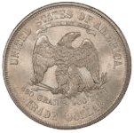
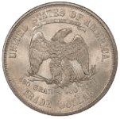

Embark on a Journey Through Time: The Majesty of the Vintage Trade Dollar
Step back in time with this authentic Trade Dollar, a tangible relic from the bustling trade routes and economic endeavors of the late 19th century. Minted in 1873, this coin carries the weight of a transformative era in global commerce, echoing the adventurous spirit and commercial ambition of its time. Featuring the majestic American eagle on the obverse, this coin transports you to an era of burgeoning trade and exploration. As a symbol of American economic prowess and international engagement, the eagle embodies the entrepreneurial spirit and expansionist ideals of the post-Civil War United States. On the reverse, intricate designs and motifs pay homage to the intricate network of trade and exchange that characterized the era. From depictions of ships sailing across vast oceans to symbols of prosperity and abundance, each detail tells a story of cross-cultural interaction and economic integration. Whether you're a seasoned numismatist, a lover of history, or simply intrigued by the allure of vintage treasures, this Trade Dollar holds undeniable fascination. Display it proudly as a centerpiece of your collection, or let it spark conversations about the interconnectedness of nations and the legacy of trade in shaping the modern world.
 
